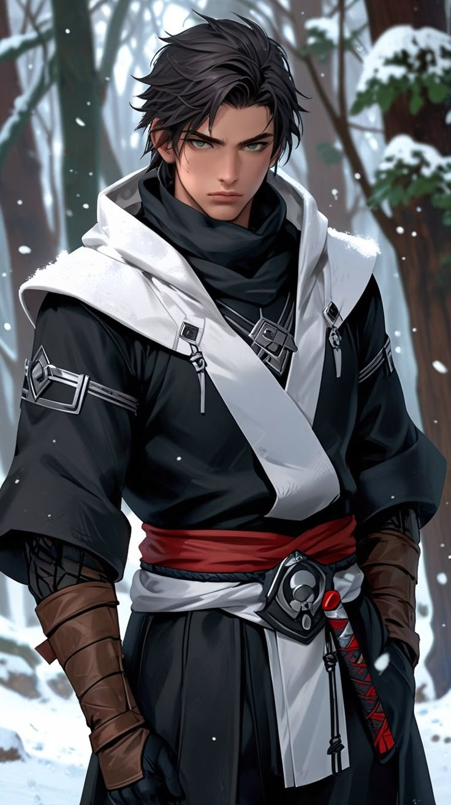

0006A – Kain Hamisch
Tiermensch, Falke, mit Glacia/Aquaris-Resonanz. Retter Olgas während 5001. Besitzt zusätzlich eine Falkengestalt als 0006B.
Wichtigste Beziehung
Olga Kirovsky: Rettete Olga nach ihrem Sturz in den Fluss.

Tiermensch, Falke, mit Glacia/Aquaris-Resonanz. Retter Olgas während 5001. Besitzt zusätzlich eine Falkengestalt als 0006B.
Olga Kirovsky: Rettete Olga nach ihrem Sturz in den Fluss.